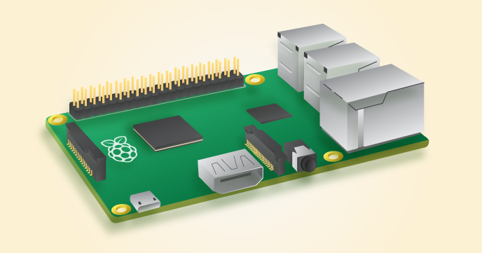

class: center, middle # Introduction of Raspberry Pi .right[Zhihua Hong] --- # What Is Raspberry Pi > "The [Raspberry Pi](https://www.raspberrypi.org/help/what-is-a-raspberry-pi/) is a low cost, credit-card sized computer > that plugs into a computer monitor or TV, and uses a standard keyboard and mouse." > "Our Foundation’s goal is to advance the education of adults and children, > particularly in the field of computers, computer science and related subjects. " The Raspberry Pi Foundation is a registered educational charity based in the UK. <div style="text-align: center;"> </div> ??? lightweight, cheap, power save, small, as a controller --- # Models #### Two models. The small model, [Raspberry Pi 2 Model B](https://www.raspberrypi.org/products/raspberry-pi-2-model-b/). And the even smaller model, [Raspberry Pi Zero](https://www.raspberrypi.org/products/pi-zero/). <div style="text-align: center;"> <a href="https://www.raspberrypi.org/products/raspberry-pi-2-model-b/">  </a> </div> <div style="text-align: center;"> <a href="https://www.raspberrypi.org/products/pi-zero/"> <img src="raspberry-pi-intro/model-0.png" style="width:50%;"> </a> </div> --- # Specs of Raspberry Pi 2 Model B It's published in February 2015 to replace old Raspberry Pi 1 Model B+. Price is **$35**. - A 900MHz quad-core **ARM** Cortex-A7 CPU - 1GB RAM - 4 USB ports - 40 GPIO(general purpose input/output) pins - Full HDMI port - Ethernet port - Combined 3.5mm audio jack and composite video - Camera interface (CSI) - Display interface (DSI) - Micro SD card slot - VideoCore IV 3D graphics core Because it has an ARMv7 processor, it can run the full range of ARM GNU/Linux distributions, as well as [Microsoft Windows 10](https://www.raspberrypi.org/blog/raspberry-pi-2-on-sale/). ??? 可以连接风扇、继电器等等 --- # Specs of Raspberry Pi Zero Half the size of a Raspberry Pi 2 Model B. Only **$5**. - 1Ghz, Single-core CPU - 512MB RAM - Mini HDMI and USB On-The-Go ports - Micro USB power - HAT-compatible 40-pin header - Composite video and reset headers --- # Buy a Raspberry Pi and Accessories - Raspberry Pi 2 Model B, ¥238.00, [Purchase Link](https://detail.tmall.com/item.htm?id=43782363457&spm=a1z09.2.0.0.lqDBev&_u=n1l0dhodd4a) - Shell, ¥13.90 - Fan, ¥13.90 - EDUP EP-N8508GS USB Wireless network card, ¥29.00, [Purchase Link](http://item.jd.com/509932.html) - 5V 2A USB Power Adapter Huawei, ¥35, [Purchase Link](http://item.jd.com/1333526.html) - micro-SD card SanDisk, ¥33, [Purchase Link](http://item.jd.com/1875996.html) - HDMI cable *(One Time Usage)* - Keyboard *(One Time Usage)* - Mouse *(One Time Usage)* **¥362.8** in total. <div style="text-align: center;"> </div> ??? 买的时候，没有在国内找到官方的销售渠道，淘宝买的 风扇有噪音，天冷不用开 自带了一个读卡器，如果没有，买一个读卡器 一般只在安装系统使用一次 --- # Set Up - Install an Operating System [NOOBS](https://www.raspberrypi.org/help/noobs-setup/) (New Out Of the Box Software), an easy operating system install manager for the Raspberry Pi. - Download NOOBS - Format the SD Card via SD Formatter 4.0 - Extract NOOBS and drop all files onto the SD card. - Connect keyboard, mouse and monitor, and boot. --- # Set Up - Connect to Wifi EDUP EP-N8508GS is **driver free** on Raspberry Pi. Plug in the EDUP EP-N8508GS and check if it works. ```bash $ lsusb # If EP-N8508GS works, it should be listed in the output. $ iwconfig # If EP-N8508GS works, you will see `wlan0` in the output ``` List SSID of Wifi. ```bash $ iwlist wlan0 scan ``` Copy generated psk information to `wpa_supplicant.conf` file. ```bash $ wpa_passphrase ssid wifi-password ``` Edit `/etc/network/interfaces` file and start connecting to Wifi. ```bash $ sudo ifup wlan0 ``` --- # Remote Login Configure your Router to assign a **static IP** address for your Pi. For desktop/laptop, you can login your Pi via `ssh`. For mobile phone, try Serverauditor, which is available on both iOS and Android. <div style="text-align: center;"> </div> --- # Application, a Music Alarm Play music to wake myself up in the morning. ### How it works - Copy (favorite) songs to Pi. - A tiny Python script to play songs. - A cron job as the timer. ### Future improvement - "Copy and play" is too old fashion. Use a cloud music service. (A [open sourced](https://github.com/darknessomi/musicbox) CLI player for 网易云音乐.) ??? 网易云音乐有web api；随时在手机上修改播放列表 --- # Application, a Music Alarm, Source ```python import os, glob, random def playSongs(): location = '/home/pi/Music' os.chdir(location) max = 2 songs = glob.glob('*.mp3') # shuffle size = len(songs) for x in range(0, size): pick = random.randint(x, size-1) (songs[x], songs[pick]) = (songs[pick], songs[x]) for x in songs[:max]: play_mpg321(x) def play_mpg321(song): cmd = 'mpg321 "' + song + '"' os.system(cmd) if __name__ == "__main__": playSongs() ``` 25 7 * * 1,2,3,4,5 python /home/pi/workspace/raspberry-pi/music.py --- # Application, a Weather Forecaster Sometimes, you just too lazy to open up an app to check weather before leaving home. Speak out PM 2.5 index, temperature, weather condition loudly in the morning. ### How it works. - Parse [中国天气网](http://www.weather.com.cn/weather1d/101020100.shtml) HTML page to get data. (A free weather API is not easy to get.) - A [TTS(text to speech) API](http://tts.baidu.com/text2audio?lan=zh&pid=101&ie=UTF-8&text=%25E5%25A4%25A7%25E5%25AE%25B6%25E5%25A5%25BD) to generate voice (From Baidu). - A cron job as the timer. ```bash 23,35 7 * * 1,2,3,4,5 cd /home/pi/log/ && python /home/pi/workspace/raspberry-pi/weather.py --hours 8,9,17,18 --history 5 >> /home/pi/log/weather.log 2>&1 ``` [Source code](raspberry-pi-intro/weather.py) [Voice Sample](raspberry-pi-intro/2016-01-29.mp3) --- # Application, a VOD Service A video on demand service, which is able to stream videos to iPhone, iPad and desktop. #### How it works - A responsive UI by Bootstrap - [HTTP Live Streaming/HLS](https://developer.apple.com/library/ios/documentation/NetworkingInternet/Conceptual/StreamingMediaGuide/Introduction/Introduction.html#//apple_ref/doc/uid/TP40008332-CH1-SW1) standard from Apple - Serve video by NGINX #### To be improved - Performance issue. - Disk space waste. [NGINX Plus](https://www.nginx.com/products/streaming-media-delivery/) provides a better solution, but it's not free. <div style="text-align: center;"> </div> --- # Applications from Other Users - [远程开门器](http://blog.douban.com/douban/2013/01/07/2135/) - [家庭监控和移动目标探测](http://python.jobbole.com/81645/) - Airplay Server - And many many others... ??? tv box wireless switch; smart home? http://ukonline2000.com/ --- class: center, middle # Thanks